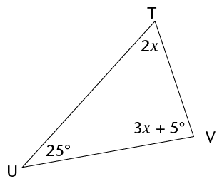
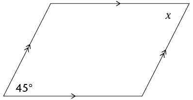
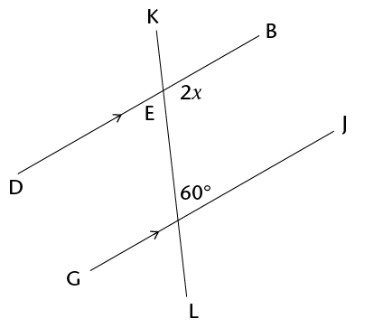
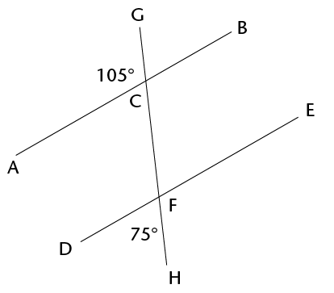
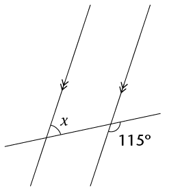

<div class="container">
  <div id="contents" class="col-md-12 main-content"><h1 xmlns="http://www.w3.org/1999/xhtml" id="toc-id-37">Kwartaal hersiening en assessering</h1>
<h2 xmlns="http://www.w3.org/1999/xhtml" id="toc-id-38">Hersiening</h2>
    <p xmlns="http://www.w3.org/1999/xhtml" class="Body-no-indent">Wys al die stappe in jou werk.
</p>

    <h3 xmlns="http://www.w3.org/1999/xhtml" class="Head-investigation">Algebraïese uitdrukkings</h3>
    
    <ol xmlns="http://www.w3.org/1999/xhtml"><li class="Body-investigation"> Vereenvoudig:
    <ol><li class="ques-a-">\(x^2 + x^2\)
    <hr/></li>
    <li class="ques-a-">\(m + m \times m + m\)
    <hr/></li>
    <li class="ques-a-"> \(5ab - 7a^2 - 2a^2 + 11ba\)
    <hr/></li>
    <li class="ques-a-"> \((3ac^2)(-4a^2b)\)
    <hr/></li>
    <li class="ques-a-"> \((-4a^{2}b^{3})^3\)
    <hr/></li>
    <li class="ques-a-"> \((\frac{-6x^2yz^4}{3xyz})^2\)
    <hr/></li>

    <li class="ques-a-"> \(\sqrt{\frac{100x^4}{81y^{64}}}\)
    <hr/></li>
    <li class="ques-a-"> \(\sqrt{16c^2 + 9c^2}\)
    <hr/></li>

    <li class="ques-a-"> \((2x + 3x)^3\)
    <hr/></li>

    <li class="ques-a-"> \(3x^2(4x^3 - 5)\)
    <hr/></li>

    <li class="ques-a-"> \((4a - 7a)(a^2 - 2a - 5)\)
    <hr/></li>

    <li class="ques-a-"> \(\frac{9c^2de^3}{3c^2d^2e^2f}\)
    <hr/></li>
    <li class="ques-a-"> \(\frac{6b^2 - 3b^2}{2b^2}\)
    <hr/></li>

    <li class="ques-a-"> \(\frac{10x^2 - 5x + 1}{5}\)
    <hr/></li>
    <li class="ques-a-"> \(\frac{14x -21x^2}{7x^2}\)
    <hr/></li>
</ol></li>

    <li class="Body-investigation"> Vereenvoudig die volgende uitdrukkings:
    <ol><li class="ques-a-">\( 3(a+ 2b) - 4(b - 2a)\)
    <hr/></li>

    <li class="ques-a-">\( 3 - 2(5x^2 + 6x - 2)\)
    <hr/></li>

    <li class="ques-a-">\( 2x(x^2 - x + 1) - 3(4 - x)\)
    <hr/></li>

    <li class="ques-a-">\( (2a + b - 4c) - (5a + b - c)\)
    <hr/></li>

    <li class="ques-a-">\(a\{2a^2[4 + 2(3a + 1)] - a\}\)
    <hr/></li>
</ol></li>

    <li class="Body-investigation-hanging"> As 
 \(a = 0, ~b = -2\), en
 \(c = 3\), bepaal die waarde van die volgende sonder om ’n sakrekenaar
te gebruik. Wys al jou berekeninge:
      <ol><li class="ques-a-"> \(b^2c \)
    <hr/></li>

    <li class="ques-a-"> \(2b - b(ab - 5bc) \)
    <hr/></li>

    <li class="ques-a-">\(\frac{2b + c - 10a}{3c^2}\)
    <hr/></li>
</ol></li>

    <li class="Body-investigation"> If \(y = -2\), bepaal die waarde van
 \(2y^3 - 4y + 3\)
    <hr/></li>
</ol><h3 xmlns="http://www.w3.org/1999/xhtml" class="Head-investigation">Algebraïese vergelykings</h3>

 <ol xmlns="http://www.w3.org/1999/xhtml"><li class="Body-investigation"> Los die volgende vergelykings op:
      <ol><li class="ques-a-"> \( -x = -7\)
    <hr/></li>

    <li class="ques-a-"> \( 2x = 24\)
    <hr/></li>

    <li class="ques-a-"> \( 3x - 6 = 0\)
    <hr/></li>

    <li class="ques-a-"> \( 2x + 5 = 3\)
    <hr/></li>

    <li class="ques-a-"> \( 3(x - 4) = -3\)
    <hr/></li>

    <li class="ques-a-"> \( 4(2x - 1) = 5(x - 2)\)
    <hr/></li>
    </ol></li>
      
    <li class="Body-investigation"> Sello is \(x\) jaar oud. Thlapo is 4 jaar ouer as
 Sello. Die som van hulle ouderdomme is
 32.
      <ol><li class="ques-a-">  Skryf hierdie inligting in ’n vergelyking deur
 \(x\) as die veranderlike te gebruik.
    <hr/></li>

    <li class="ques-a-"> Los die vergelyking op om Thlapo se ouderdom te bepaal.
    <hr/></li>
</ol></li>

    <li class="Body-investigation-hanging"> Die lengte van ’n reghoek is
 \(2x + 8\) cm en die breedte is
 2 cm. Die oppervlakte van die
reghoek is
 12
    cm\(^2\).
      <ol><li class="ques-a-"> Skryf hierdie inligting in ’n vergelyking deur
g \(x\) as die veranderlike te gebruik.
    <hr/></li>

    <li class="ques-a-"> Los die vergelyking op om die waarde van
 \(x\) te bepaal.
    <hr/></li>

    <li class="ques-a-"> Wat is die lengte van die reghoek?
    <hr/></li>
</ol></li>

    <li class="Body-investigation-hanging">Die oppervlakte van ’n reghoek is
 \((8x^2 + 2x)\) cm\(^2\), en die lengte is

    \(2x\) cm. Bepaal die
breedte van die reghoek in terme van
 \(x\), in sy eenvoudigste vorm.
    <hr/></li>
</ol><h3 xmlns="http://www.w3.org/1999/xhtml" class="Head-investigation">Konstruksie van meetkundige figure</h3>

    <p xmlns="http://www.w3.org/1999/xhtml" class="Body-no-indent">Moenie enige konstruksieboë in hierdie vrae uitvee
nie.</p>

 <ol xmlns="http://www.w3.org/1999/xhtml"><li class="ques-a-">
      <ol><li> Konstrueer
 \(\hat{DEF} = 56^{\circ}\) met jou liniaal, potlood en ’n gradeboog. Benoem die
hoek
	korrek.
    <hr/></li>

    <li class="ques-a-"> Halveer
 \(\hat{DEF}\) deur net ’n passer, liniaal en potlood (nie ’n gradeboog nie)
	
te gebruik.
        <hr/></li>
  </ol></li>

    <li class="Body-investigation"> Hier is ’n ruwe skets van ’n vierhoek (NIE
volgens skaal geteken nie):

    <p class="Body-no-indent"><span></span> </p>

    <p class="Body-investigation">Konstrueer die vierhoek akkuraat en in volle
grootte hier onder.</p>
  </li>
  
    <li class="Body-investigation"> Gebruik net ’n passer, liniaal en potlood en
konstrueer:
      <ol><li class="ques-a-">  ’n lyn deur C wat loodreg op AB is
</li>

    <li class="ques-a-">’n lyn deur D wat loodreg op AB is
</li>
</ol><p class="Body-investigation para-style-override-47">
    <span></span> </p>
  
</li>

    <li class="Body-investigation"> Konstrueer en benoem die volgende driehoeke
en vierhoeke:
      <ol><li class="ques-a-"> Driehoek
 ABC, waar
 AB = 8 cm; BC = 5,5
    cm en
 AC = 4,9 cm
    <hr/></li>
     

    <li class="ques-a-"> Ruit GHJK, waar GH = 6 cm en
 \( \hat{G} = 50^{\circ}\)
          <hr/></li>
  </ol></li>

    <li class="Body-investigation"> Hier is ’n ruwe skets van driehoek FGH (NIE
volgens skaal geteken nie):

    <p class="Body-no-indent"><span></span> </p>

    <p class="ques-a-">Gebruik ’n liniaal, potlood en gradeboog, en konstrueer
en benoem die driehoek
akkuraat en in volle grootte.</p>

    <hr/></li>

    <li class="Body-investigation"> Konstrueer ’n hoek van

    120° sonder om ’n gradeboog te gebruik.
    <hr/></li>
  </ol><h3 xmlns="http://www.w3.org/1999/xhtml" class="Head-investigation">Meetkunde van</h3>

 <ol xmlns="http://www.w3.org/1999/xhtml"><li class="Body-investigation-hanging"> Waar of onwaar? Alle gelyksydige
driehoeke – dit maak nie saak hoe groot hulle is
nie – het hoeke wat gelyk is aan
 60°.<hr/></li>
    <li class="ques-a-">
      <ol><li>Twee van die hoeke in ’n driehoek is

    35° en 63°. Bereken die grootte van die derde
	hoek.<hr/></li>


    <li class="ques-a-"> Een van die hoeke in ’n vierhoek is ’n regte hoek en
’n ander een is 80°. As die oorblywende twee hoeke ewe groot is, wat is die grootte van elkeen? <hr/></li>
    </ol></li>
    <li class="Body-investigation">As \(\hat{M} = 40^{\circ}\) en \(\hat{N} = 90^{\circ}\),  wat is die grootte van \(\hat{P}\)? <hr/></li>

    <li class="Body-investigation"> Skryf definisies van die driehoeke in die
tabel hier onder neer.

    <table id="table-70" class="No-Table-Style"><tbody><tr class="Row-Column-6"><td>
            <p class="Table-header-centred">Gelyksydige driehoek
</p>
          </td>

          <td>
            <p class="Table-header-centred">Gelykbenige driehoek
</p>
          </td>

          <td>
            <p class="Table-header-centred">Reghoekige driehoek
</p>
          </td>
        </tr><tr class="Row-Column-463"><td>
          </td>

          <td>
          </td>

          <td>
          </td>
        </tr></tbody></table></li>
  
    <li class="Body-investigation"> Die volgende lys gee die eienskappe van drie
vierhoeke:
 A, B en C.
      <ol><li class="ques-a-"> Gee die spesiale name van elk van figure

    A, B en
 C.

    <p class="ques-a-"><b>Vierhoek A:</b> Die teenoorstaande sye is gelyk en ewewydig.</p>
    <hr/><p class="ques-a-"><span><b>Vierhoek B:</b> Die aangrensende sye is gelyk, terwyl die teenoorstaande sye nie
	
gelyk is nie..</span></p>
    <hr/><p class="ques-a-"><b>Vierhoek C:</b> Al die hoeke is regte hoeke .</p>
    <hr/></li><li class="ques-a-"> Watter eienskap moet vierhoek A ook hê om dit ’n ruit
te maak?
    <hr/></li>
    <li class="ques-a-"> Watter eienskap moet vierhoek A ook hê om dit ’n
reghoek te maak?
    <hr/></li>
   </ol></li>
 
    <li class="Body-investigation"> Bepaal die grootte van
 \(\hat{V}\). Wys al die stappe van jou berekening en gee redes.

    <div class="frame-14"></div>
    <hr/></li>

    <li class="Body-investigation"> Bepaal die grootte van
 \(x\). Gee redes.

    <div class="frame-14"></div>
    <hr/></li></ol>


    <h3 xmlns="http://www.w3.org/1999/xhtml" class="Head-investigation">Meetkunde van reguit lyne</h3>

 <ol xmlns="http://www.w3.org/1999/xhtml"><li class="Body-investigation"> Bestudeer die diagram langsaan:

    <div class="frame-14"></div>
    <ol><li class="ques-a-"> Noem ’n hoek wat regoorstaande

    aan 
 \(\hat{EHG}\) is.
    <hr/></li>
    <li class="ques-a-"> Noem ’n hoek wat ooreenkomstig
 aan
 \(\hat{EHG}\) is.
    <hr/></li>
    <li class="ques-a-"> Noem ’n hoek wat ’n ko-binnehoek met

 \(\hat{EHG}\) is.
    <hr/></li>
    <li class="ques-a-"> Noem ’n hoek wat verwisselend met
\(\hat{EHG}\) is.
    <hr/></li>
</ol></li>

    <li class="Body-investigation-hanging"> Bepaal die grootte van

    \(x\) in elk van die volgende diagramme. Wys alle stappe van jou
werk en gee redes.
      <ol><li class="ques-a- para-style-override-48">

    <div class="frame-14"></div>
    <hr/></li>

    <li class="ques-a-">

    <div class="frame-14"></div>
    <hr/></li>
  
    <li class="ques-a-">

    <div class="frame-14"></div>
    <hr/></li>
  
    <li class="ques-a-">

    <div class="frame-14"></div>
    <hr/></li>
 

    <li class="ques-a-"> Is lynstukke AB en DE ewewydig?
Bewys jou antwoord.

    <div class="frame-14"></div>
    <hr/></li>
</ol></li>
</ol><h2 xmlns="http://www.w3.org/1999/xhtml" id="toc-id-39">Assessering</h2>

    <p xmlns="http://www.w3.org/1999/xhtml" class="Body-no-indent">In hierdie afdeling dui die getalle tussen hakies
aan die einde van ’n vraag die getal punte
aan wat die vraag werd is. Gebruik hierdie inligting om jou te help bepaal
hoeveel werk
nodig is. Die totale getal punte wat aan die assessering toegeken word, is 75.</p>

 <ol xmlns="http://www.w3.org/1999/xhtml"><li class="Body-investigation"> Vereenvoudig die volgende uitdrukkings:
    <ol><li class="ques-a--with-marks"> \(5x^2 - 6x^2 + 10x^2\) 
    <hr/></li>

    <li class="ques-a--with-marks"> \(4(3x - 7) - 3(2 + x)\) 
    <hr/></li>
  
      <li class="ques-a--with-marks"> \((-2a^2bc^3)2 \div 4abcd\) 
    <hr/></li>


    <li class="ques-a--with-marks">\(\frac{2x(3x-15)}{3x}\) 
    <hr/></li>

    <li class="ques-a--with-marks"> \(\sqrt[3]{108d^{15} \div 4d^6}\) 
    <hr/></li>

    <li class="ques-a--with-marks"> \(2[3x^2 - (4 - x^2)] - [9 + (4x)^2]\) 

    <hr/></li>
</ol></li>

    <li class="Body-investigation"> Bepaal die waarde van
 \(a\) if \(b = 3,~ c = -4\) en \(d = 2\):
      <ol><li class="ques-a--with-marks">\(a = b + c \times d\) 
    <hr/></li>

    <li class="ques-a--with-marks"> \(ab^2 = 2c - d \div 2\) 
    <hr/></li>
</ol></li>

    <li class="Body-investigation"> Los die volgende vergelykings op:
      <ol><li class="ques-a--with-marks"> \( -7x = 56\) 
    <hr/></li>

    <li class="ques-a--with-marks"> \(4(x + 3) = 16\) 
    <hr/></li>
</ol></li>

    <li class="Body-investigation-hanging"> Sipho, Fundiswa en
    Ntosh is broers. Sipho verdien Rx per maand; Fundiswa verdien
R1 000 meer as Sipho per maand, en Ntosh verdien dubbel wat Sipho verdien. As jy
hulle salarisse bymekaartel, kry jy ’n totaal van R27 000.
      <ol><li class="ques-a--with-marks"> Skryf hierdie inligting in ’n vergelyking
deur
 \(x\) te gebruik. 
    <hr/></li>

    <li class="ques-a--with-marks"> Los die vergelyking op om uit te vind
hoeveel Fundiswa per maand verdien.     <hr/></li>
</ol></li>

    <li class="Body-investigation-hanging"> Konstrueer die volgende deur net ’n
potlood, liniaal en passer te gebruik. Moenie
enige konstruksieboë uitvee nie.
      <ol><li class="ques-a--with-marks"> 	'n Hoek van 
 60°
           <hr/></li>

    <li class="ques-a--with-marks"> Die loodregte halveerlyn van lyn VW, waar VW
= 10 cm 

        <hr/></li>

    <li class="ques-a--with-marks"> Driehoek KLM, waar KL = 8,3 cm, LM = 5,9 cm
en KM = 7 cm 

        <hr/></li>

    <li class="ques-a--with-marks para-style-override-29">
    Parallelogram EFGH, waar 
 E = 60°, EF = 4,2 cm en 

    EH = 8 cm 
        <hr/></li>
</ol></li>

    <li class="ques-a--with-marks">
      <ol><li> Wat is die kenmerk(e) wat ’n ruit 
 <u>anders 
</u> as ’n parallelogram maak?
   
    <hr/></li>

    <li class="ques-a--with-marks"> Waar of onwaar? ’n Reghoek is ’n spesiale
soort parallelogram.         <hr/></li>
</ol></li>

    <li class="Body-investigation-hanging"> Bepaal die grootte van x in elke
figuur. Wys al die nodige stappe en gee redes vir alle
bewerings.
      <ol><li class="ques-a--with-marks">

    <div class="frame-14"></div>
    <hr/></li>

    <li class="ques-a--with-marks">

    <div class="frame-14"></div>
    <hr/></li>

    <li class="ques-a--with-marks">

    <div class="frame-14"></div>
    <hr/></li>
</ol></li>

    <li class="Body-investigation"> Bestudeer die diagram. Beantwoord dan die
vrae wat volg:

    <p class="Body-investigation"><span></span> </p>
    <ol><li class="ques-a--with-marks para-style-override-11">Wat word hoeke soos \(x\) en
    \(y\) genoem? Voltooi:
    
    <p> \(x\) en    \(y\) 
vorm ’n paar __________________          </p></li>

    <li class="ques-a--with-marks"> Skryf ’n vergelyking neer wat die
verwantskap tussen hoeke
 \(x\) en \(y\).
      <hr/></li>
</ol></li>

    <li class="Body-investigation-hanging"> Bepaal die grootte van

    \(x\), Wys al die nodige stappe en gee redes vir alle bewerings wat
jy maak:
      <ol><li class="ques-a--with-marks"> 

    <div class="frame-14"></div>
    <hr/></li>

    <li class="ques-a--with-marks">

    <div class="frame-14"></div>

      <hr/></li>

    <li class="ques-a--with-marks">

    <div class="frame-14"></div>
    <hr/></li>
</ol></li>

    <li class="Body-investigation-hanging"> Kyk na die volgende diagram, waarin
gegee word dat
 \(\hat{DEI} = 30^{\circ}, ~DE = EI, ~DF
   \parallel IG\), en \(GH = IH\).

    <p class="ques-a-"><span></span> </p>
    <ol><li class="ques-a--with-marks"> Bepaal, met redes, die grootte van
 \(\hat{H}\).     <hr/></li>

    <li class="ques-a--with-marks"> Watter van die volgende stellings is korrek?
Verduidelik jou antwoord.     
    <ol><li class="ques-a-"> \({\triangle}\text{DEI}\) is gelykvormig aan \({\triangle}\text{GHI}\) <hr/></li>

    <li class="ques-a-"> \({\triangle}\text{DEI}\) is kongruent aan \({\triangle}\text{GHI}\)       <hr/></li>

    <li class="ques-a-"> Ons kan nie ’n verwantskap tussen
 \({\triangle}\text{DEI}\) en \({\triangle}\text{GHI}\) bepaal nie omdat
daar nie genoeg inligting gegee word nie.
   
   
   <p>Stelling ______ is korrek want </p> <hr/>
</li></ol>
</li>
 </ol>
 </li>
 </ol>
 
  </div>
</div>